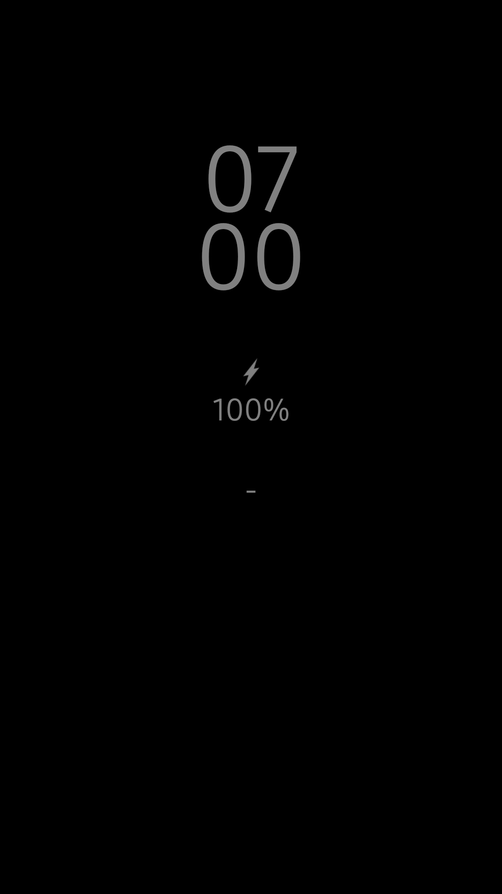

AlwaysOn is an app for every device with an AMOLED or OLED display. It keeps your screen on while the clock and battery percentage are displayed but it does not drain your battery.
Also, icons appear when you plug in your headphones or start charging your device.
Root is required!
I am not responsible for any damage to your device!
Link to Android Studio
App download only on request
